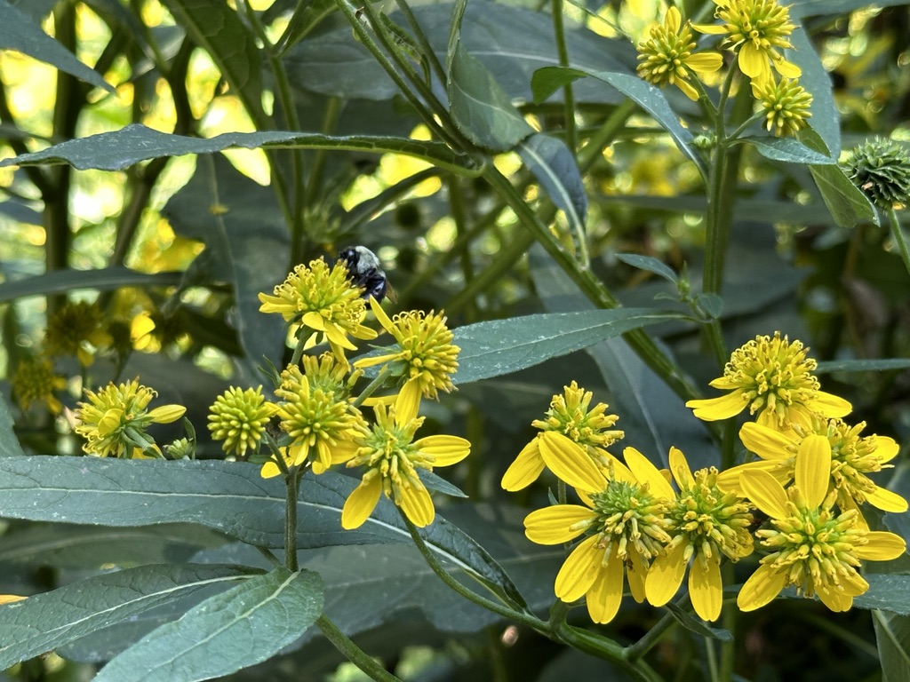

I have dug my fair share of trenches
and I don’t doubt thatI’ll
probably dig more.
Water fills each one to the brim
with drops heavy
full with salt
that hit me as if I were a snail
out of my natural salinity.
In every one, I'm at the bottom center.
Looking up from below
to the light glistening
through the very water that holds me.
Sometimes I wonder
if it’d be better to be at the surface,
to drift at sea in that light,
hoping that there will be change
without me coming out of my own stagnancy.
But just like the sea I am not still.
I am ever changing
like the waves on the surface that move the foam along
or the currents that passively guide the turtles
on their way to the nesting grounds.
I can’t deny the change
or act like it does not exist,
for the turtles depend on it.
If I do,
I think I’d very much drown
while believing that the whole time
I was indeed swimming.
I started writing poetry back in 2023. It has become something I do when I have a topic in mind. It has become a way to express myself while also reflecting on different ideas and topics.

Taking photos is something I got more into recently. It is something I do mainly for fun. I tend to take pictures of flora and insects around NYC. This photo was taken in the green space outside of Seward Park Library.
This is a demo of the NYSEE prototype that my group and I made for the 2026 Macaulay Honors MHC++ hackathon. This was my second ever hackathon and it was a lot of fun. It exposed me to whole bunch of web development processes that I was unfamiliar with.